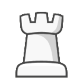
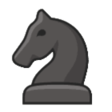
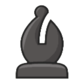
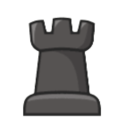

<jb-modal-header jbTitle="view.game.select_piece.header" (jbClose)="activeModal.dismiss()"></jb-modal-header>

<div class="modal-body">

  
  
  
  

  
  
  
  

</div>

<!--<div class="modal-footer">-->
<!--  <jb-btn jbType="cancel" (jbClick)="activeModal.dismiss()"></jb-btn>-->
<!--</div>-->
